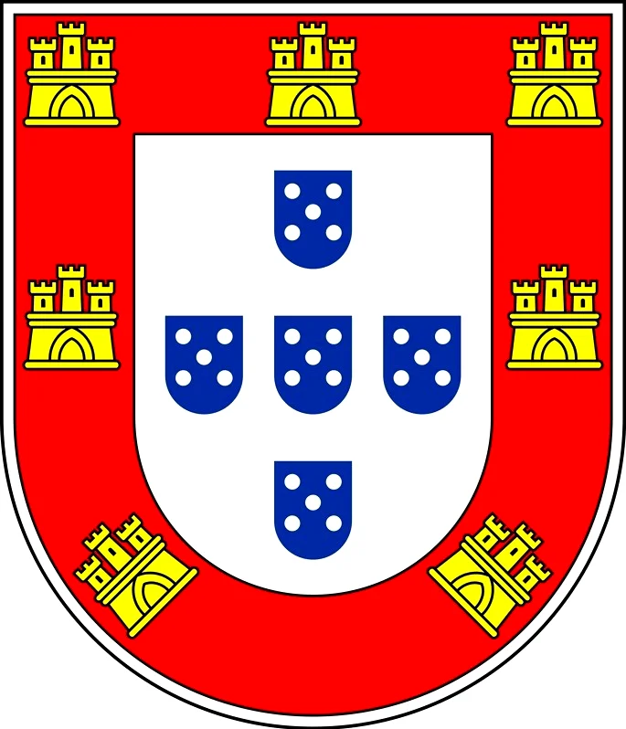

Aqui colocarei algumas anotações sobre a história do Brasil.
Nação Portuguesa
O Brasil foi fundado por Portugal em 1500. Quando os portugueses chegaram nessas terras encontraram uma infinidade de tribos de selvagens que viviam em constante guerra entre si. Esses nativos possuíam os habitos mais grotescos e crueis que já se havia visto. Viviam nus, praticavam sacrafícios humanos aos ídolos, cometiam antropofagia generalizada, com excessão de uma tribo ou duas. Não possuiam nenhuma civilização. Eram praticamente nômades que esgotavam os recursos de suas regiões e depois se mudavam para outra.

Imagem: Os Goytacazes
A vocação de Portugal era missionária. A guerra da reconquista havia terminado e a Fé de Jesus Cristo triunfou contra a impiedade maometana. Desejavam expandir o dominio de Cristo Rei para as terras longínquas e por isso esse era seu principal objetivo com as grandes navegações de quem foi protagonista. Por essa razão um dos primerios atos que foi realizado no Brasil foi a celebração do Santo Sacrfício da Missa. As ordens religiosas então começaram um trabalho de evangelização e de civilização com os indios. Os Franciscanos e mais tarde os Jesuítas foram as principais ordens religiosas que realizaram esse nobre trabalho.

Primeira Missa no Brasil em 1500
Porém com a fundação da União Ibérica em 1580, com Filipe I, II e III, tudo passou a ser território do Império Espanhol. Houve então uma guerra que Portugal realizou para se tornar independente da Espanha, e ambos os países entraram em um conflito que gerou consequencias em todas as colônias. Isso se deu entre o século XVI e XVII.
Por isso houveram varias campanhas militares por parte dos Portugueses no Brasil, com o fim de evitar que a Espanha ficasse com territórios que eram de Portugal por direito acordado no tratado de tordesilhas. Nesse contexto e entre esses períodos houveram os Bandeirantes. Eles eram grupos de exploradores que buscavam ampliar o terrório, que na época pertencia a todo o Império Espanhol por ocasião da União Ibérica. Era uma iniciativa que agradava muito aos índios, já que eles mesmos eram exploradores. E graças as ações dos bandeirantes o Brasil se tornou essa região tão vasta que conhecemos.
A escravidão no Brasil
A escravidão foi algo que aconteceu desde os primórdios da história da humanidade. Muitas foram as motivações por detrás da escravização. Muitas vezes eram prisioneiros de guerra, outras vezes eram nascidos de escravos, outras alguém se vendia para não morrer de fome. Mas o que todas tem em comum era que tinham uma finalidade economica ou em alguns casos religiosa, como acontecia nas tribos bárbaras e nas religiões pagãs onde seres humanos capturados eram sacrificados aos ídolos, mas nesse caso já não poderíamos qualificar de escravidão.
No Brasil houve o maior número registado de comércio de escravos. Porém, também era o lugar onde mais aconteciam alforrias e onde mais haviam direitos aos escravos, assim como a capacidade deles comprarem a sua liberdade trabalhando a mais nos dias de sábado.
O fato de o Brasil ter tido um numero elevado de compra de escravos demonstra que na época do império ele era verdadeiramente rico, pois escravos custavam muito dinheiro.